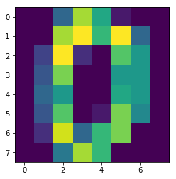

4.5:实战案例
手写数字数据
手写数字数据集一共有1797个样本，每个样本有64个特征。每个特征的值为0-255之间的像素，我们的任务就是根据这64个特征值识别出该数字属于0-9十个类别中的哪一个。
我们可以使用sklearn直接对数据进行加载，代码如下：
from sklearn.datasets import load_digits
#加载手写数字数据集
digits = load_digits()
#获取数据特征与标签
x,y = digits .data,digits .target
当然，每一个样本就是一个数字，我们可以把它还原为8x8的大小进行查看：
import matplotlib.pyplot as plt
img = x[0].reshape(8,8)
plt.imshow(img)

然后我们划分出训练集与测试集，训练集用来训练模型，测试集用来检测模型性能。代码如下：
from sklearn.model_selection import train_test_split
#划分训练集测试集，其中测试集样本数为整个数据集的20%
train_feature,test_feature,train_label,test_label = train_test_split(x,y,test_size=0.2,random_state=666)
进行识别
接下来就只需要调用之前实现的knn_clf方法就可以对测试集的手写数字进行识别了：
predict = knn_clf(3,train_feature,train_label,test_feature)
predict
>>>array([1, 5, 0, 7, 1, 0, 6, 1, 5, 4, 9, 2, 7, 8, 4, 6, 9, 3, 7, 4, 7, 1,
8, 6, 0, 9, 6, 1, 3, 7, 5, 9, 8, 3, 2, 8, 8, 1, 1, 0, 7, 9, 0, 0,
8, 7, 2, 7, 4, 3, 4, 3, 4, 0, 4, 7, 0, 5, 5, 5, 2, 1, 7, 0, 5, 1,
8, 3, 3, 4, 0, 3, 7, 4, 3, 4, 2, 9, 7, 3, 2, 5, 3, 4, 1, 5, 5, 2,
9, 2, 2, 2, 2, 7, 0, 8, 1, 7, 4, 2, 3, 8, 2, 3, 3, 0, 2, 9, 9, 2,
3, 2, 8, 1, 1, 9, 1, 2, 0, 4, 8, 5, 4, 4, 7, 6, 7, 6, 6, 1, 7, 5,
6, 3, 8, 3, 7, 1, 8, 5, 3, 4, 7, 8, 5, 0, 6, 0, 6, 3, 7, 6, 5, 6,
2, 2, 2, 3, 0, 7, 6, 5, 6, 4, 1, 0, 6, 0, 6, 4, 0, 9, 3, 8, 1, 2,
3, 1, 9, 0, 7, 6, 2, 9, 3, 5, 3, 4, 6, 3, 3, 7, 4, 9, 2, 7, 6, 1,
6, 8, 4, 0, 3, 1, 0, 9, 9, 9, 0, 1, 8, 6, 8, 0, 9, 5, 9, 8, 2, 3,
5, 3, 0, 8, 7, 4, 0, 3, 3, 3, 6, 3, 3, 2, 9, 1, 6, 9, 0, 4, 2, 2,
7, 9, 1, 6, 7, 6, 3, 9, 1, 9, 3, 4, 0, 6, 4, 8, 5, 3, 6, 3, 1, 4,
0, 4, 4, 8, 7, 9, 1, 5, 2, 7, 0, 9, 0, 4, 4, 0, 1, 0, 6, 4, 2, 8,
5, 0, 2, 6, 0, 1, 8, 2, 0, 9, 5, 6, 2, 0, 5, 0, 9, 1, 4, 7, 1, 7,
0, 6, 6, 8, 0, 2, 2, 6, 9, 9, 7, 5, 1, 7, 6, 4, 6, 1, 9, 4, 7, 1,
3, 7, 8, 1, 6, 9, 8, 3, 2, 4, 8, 7, 5, 5, 6, 9, 9, 8, 5, 0, 0, 4,
9, 3, 0, 4, 9, 4, 2, 5])
再根据测试集标签即真实分类结果，计算出正确率：
acc = np.mean(predict==test_label)
acc
>>>0.994
可以看到，使用knn对手写数字进行识别，正确率能达到99%以上。